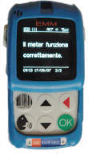

Indagine GfK-Eurisko: chi sono i veri trendsetter di
riferimento per il marketing?
Il pubblico che guarda solo la televisione non interessa più alle
aziende. Interessa il multimediale "cool" e "iperselettivo".
GfK-Eurisko ha
seguito per un mese 2300 italiani per capire come si comportano davanti
ai media. L'intervista a Giorgio Licastro, manager dell'istituto di ricerca,
con i commenti sul risultato.
di Enrico Ratto
|
Giorgio Licastro,
Media Measurement Department Manager, GfK-Eurisko |
Misurare e conoscere i diversi media a cui sono esposti ogni giorno gli
italiani: è questo l'obiettivo dell'indagine svolta da un pool di dieci
ricercatori di GfK-Eurisko e
presentata al pubblico nel giugno 2008. Un complesso lavoro di ricerca utile
a chiunque si occupi di marketing e senta la necessità - culturale e
strategica - di profilare in maniera diversa e più attuale il proprio
pubblico. Perché se è vero che il pubblico cambia continuamente, è anche
vero che in questi ultimi dieci anni l'evoluzione socio-culturale degli
italiani ha registrato un boom che ha cambiato in maniera imprevedibile e
profonda qualunque target aziendale.
Internet, le nuove tecnologie, ma soprattutto un'istruzione mai così
spostata verso l'alto hanno determinato suddivisione in profili molto
dettagliati e sottili. Non più differenti per ragioni socio-demografiche,
anzi, quasi trasversali a questi fattori.
Giorgio Licastro, manager di GfK-Eurisko, fa parte del pool che ha strutturato
questa indagine: 2000 individui monitorati di fronte ad un panel di media
pre-selezionati (dalla tv generalista, al satellite, a internet, alla
radio...)per 28 giorni ciascuno tra ottobre e dicembre 2007.
Dott. Licastro, secondo il vostro osservatorio, come è cambiato
l'utilizzo dei media da parte del pubblico?
O forse sarebbe meglio chiedersi, come è cambiato il pubblico negli
ultimi anni rispetto alle proposte dei media?
Ci siamo resi conto che è in atto una crisi drammatica della comunicazione
tradizionale. Le persone stanno cambiando, questo è indubbio, ma ciò che
osserviamo è che le loro abitudini cambiano sempre più velocemente.
Facciamo un passo indietro: dai tempi dei romani fino agli anni '70 la
popolazione con istruzione superiore era molto scarsa, inferiore al 15%.
Dopo l'inizio della scolarizzazione di massa la curva si è impennata: ora
siamo già al 35% e si stima che nel giro di un paio di decenni raggiungeremo
i 2/3 della popolazione. Questo comporta un cambiamento delle del tipo di
persone che risponde agli stimoli della comunicazione: siamo tutti sempre
meno disposti alla comunicazione verticale, siamo più portati ad un rapporto
tra pari, orizzontale.
Esistono termini tecnici per definire questo atteggiamento?
Si chiama "individualizzazione" ed è un atteggiamento contrapposto al
marketing dell'identificazione. Fino a qualche anno fa, chi faceva marketing
doveva identificare il proprio pubblico, e poi lanciare dei messaggi adatti.
I consumatori erano posti sotto un grande ombrello, e si adattavano
all'offerta.
Sarà perchè oggi i mezzi a disposizione sono molti di più rispetto ad
anni fa...
Oggi i consumatori fanno "zapping" ma non sullo stesso media, per esempio
la tv. Fanno zapping tra mezzi diversi, dalla tv a internet, alla stampa, al
telefonino. Attingono da ogni mezzo ciò che è più adatto alla loro
richiesta. Questo dovrebbe portare chi fa marketing a chiedersi: quali mezzi
utilizzare? E non dare più per scontati media come la televisione, la cui
scelta ricadeva solamente su: quale canale utilizzare?
Nella vostra indagine avete individuato varie categorie di persone,
dal monomediale attento prevalentemente ad un solo mezzo di comunicazione,
ai giovanissimi, a chi effettua scelte molto calibrate nell'offerta dei
media. La composizione di questo panorama ci dice però che il pubblico
monomediale è ancora abbastanza consistente, i numeri parlano del 20%...
Sì, la monomedialità rappresenta uno zoccolo duro ancora consistente, ma
è quello che interessa meno le aziende. Il pubblico monomediale, colui che
normalmente è attento solo alla televisione, è un pubblico assolutamente non
trend-setter, è un pubblico di "followers", che segue l'onda ma non genera
"stili"...
I trendsetter sono dunque i più giovani? Un pubblico che, comunque, a
leggere l'indagine è molto difficile da cogliere per le aziende...
I giovanissimi sono un pubblico difficilissimo per chiunque faccia
marketing. Stiamo parlando dei giovani tra i 14 e il 25 anni, più spostati
verso la parte bassa di questa forchetta. Si tratta di un pubblico che si
espone a tutto ciò che viene prodotto in modo estremamente omeopatico, è un
mordi e fuggi continuo per cui risulta difficilissimo fare frequenza. Il
contrario della monomedialità. Il giovanissimo è esposto a diversi media, li
conosce e li assorbe, ma se ne distacca in tempi brevissimi. Qui la
frequenza è uno strumento impossibile, diventa fondamentale il parere forte,
il trendsetter più adulto, il "fratello maggiore" con un solo messaggio ma
molto forte.
Sta parlando del segmento che avete definito "cool"?
Esatto, il segmento che traina i giovanissimi. E' un pubblico attento
agli stili, che fa opinione, utilizza diversi media, sa come ponderarli. Per
colpire questo pubblico è necessario seguirlo, capire dove si sta muovendo.
Ma è anche un pubblico che ha il tempo per dedicarsi all'offerta, perchè poi
esiste un'altra categoria con caratteristiche molto simili ai "cool" ma che
questo tempo non ce l'ha.
Sono gli iperselettivi?
Sì, una categoria di persone che possiamo caratterizzare così: hanno
30/40 anni, vivono nelle metropoli, hanno parecchio denaro e pochissimo
tempo libero, sono molto attrezzati da un punto di vista culturale ma non ha
tempo per dedicare attenzione ai mezzi: spesso compra il giornale e non lo
legge. E' un gruppo molto difficile da colpire.
E' un gruppo che sembra rispondere molto bene al direct mail, dedicano
più tempo alla posta (fisica) che ad una inserzione su un giornale o ad un
passaggio televisivo: per la carta di credito, la compagnia telefonica, una
brochure è uno strumento più efficace dell'adv classico, per questo pubblico
di fascia alta...
In realtà il direct mail è una modalità molto interessante, non soltanto
per gli iperselettivi. E' uno strumento in Italia non ancora completamente
sviluppato. Il direct mail è una tipologia di comunicazione estremamente
personalizzata, il tempo di esposizione risulta molto più elevato rispetto
agli strumenti classici, e anche la conversione è molto più alta. Il direct
mail oggi deve evolversi in termini di creatività, e affiancarsi ai mezzi
tradizionali per la promozione dei prodotti: di solito si aumenta l'awareness
attraverso la radio o la carta stampata, ma poi si esplicita l'offerta con
un direct mail creativo e ben fatto.
|

EMM, il meter elettronico di GfK-Eurisko, usato per analizzare la
multimedialità degli italiani |
Dove si collocano le aziende italiane per quel che riguarda la
comprensione di questi fenomeni?
Non male. L'Italia è stato il primo paese ad aver richiesto un'indagine
di questo tipo, che in altri paesi si era arenata di fronte all'incapacità
di seguire il campione nel tempo e agli elevatissimi costi raggiunti in fase
di acquisizione dati...
Con quale strumento avete realizzato questa indagine?
Utilizziamo un mix di tecnologie. Il fulcro è una specie di telefonino
che il campione disposto a partecipare all'indagine tiene con sé e che è in
grado di registrare i suoni che circondano l'individuo durante il giorno.
Non registra i suoni decodificati, quindi non si tratta di intercettazioni,
piuttosto registriamo le frequenze e poi andiamo a confrontare le frequenze
emesse dalle emittenti in quel preciso momento temporale. Attraverso
l'incrocio di questi dati, riusciamo a capire che cosa ha fatto il campione
durante il periodo di osservazione.
Questo rende tutta la comunicazione passiva ed obiettiva, e dopo un lavoro
preliminare piuttosto complesso, riusciamo a "farci raccontare" la giornata
di ognuno in maniera estremamente precisa.
1-Lug-2008
© 2008 - Eccellere - Business Community
|